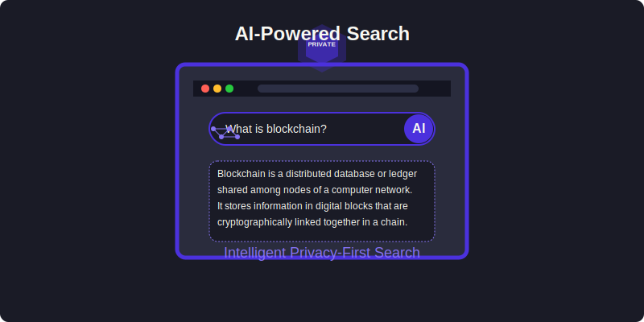

AI-Powered Search
Macro Browser features an intelligent search system that provides enhanced search capabilities while respecting user privacy.

Overview
Traditional search engines track user behavior, build profiles, and use this data for targeted advertising. Macro Browser takes a different approach, using AI to provide intelligent search results without compromising privacy.
Key Features
1. Direct Answer Generation
When you enter a question or informational query in the address bar, Macro Browser can generate direct answers without requiring you to visit a search results page:
- Factual Questions: "What is the current Bitcoin price?"
- Calculations: "Convert 2.5 ETH to USD"
- Definitions: "What is a smart contract?"
- Quick References: "Solana transaction speed"
2. Privacy-Preserving Processing
- Local Processing: Simple queries are processed directly on your device
- Anonymous API Calls: Complex queries are sent to the OpenAI API without identifiable user information
- No Query History: Search queries are not stored persistently
- No User Profiling: No behavioral profiles are built for advertising or tracking
3. Enhanced Search Suggestions
As you type in the address bar, the AI provides intelligent suggestions:
- Context-Aware Completions: Suggestions relevant to crypto and Web3 when appropriate
- Smart History Integration: Suggestions based on your current browsing session (not persisted)
- Entity Recognition: Identifies cryptocurrencies, projects, and protocols you might be searching for
4. Semantic Understanding
The AI search understands the meaning behind your queries rather than just matching keywords:
- Natural Language Processing: Understand questions as they would naturally be asked
- Intent Recognition: Determine what you're trying to accomplish
- Context Maintenance: Remember context from recent searches within the same session
Technical Implementation
Macro Browser's AI search is powered by the OpenAI API and custom local models:
┌───────────────────┐ ┌───────────────────┐
│ Address/Search │──┬──►│ Local Processing │
│ Bar │ │ │ (Simple Queries) │
└───────────────────┘ │ └───────────────────┘
│
│ ┌───────────────────┐
├──►│ Anonymous API │
│ │ (Complex Queries)│
│ └───────────────────┘
│
│ ┌───────────────────┐
└──►│ Traditional │
│ Search Engine │
└───────────────────┘
- Query Router: Determines whether to process locally, use AI, or fall back to a traditional search engine
- Privacy Wrapper: Removes identifying information before making API calls
- Result Renderer: Displays AI-generated answers directly in the browser interface
- Fallback System: Seamlessly routes to traditional search when necessary
Privacy Considerations
Macro Browser's AI search feature is designed with privacy at its core:
- Minimal Data Collection: Only the current query is processed, with no user history maintained
- Anonymized API Calls: When using the OpenAI API, requests are anonymized
- Local First: Where possible, processing happens locally on your device
- Transparent Operation: Clear indication when AI features are being used
- User Control: Options to disable AI features completely
Configuration Options
Users can customize the AI search through browser settings:
- AI Assistance Level: Control how extensively AI is used in searches
- Default Search Engine: Choose which traditional search engine to use as backup
- Query Blacklist: Specify types of queries that should never use AI processing
- Local Model Usage: Control whether lightweight models run locally
Examples
Direct Answer Example
Query: "What is the current gas price on Ethereum?"
Response:
Current Ethereum Gas Price: 25 Gwei
Base fee: 20 Gwei
Priority fee: 5 Gwei
Last updated: 2 minutes ago
Source: Etherscan
Search Suggestions Example
Partial Query: "swap tokens on uni..."
Suggestions:
- swap tokens on Uniswap
- Uniswap V3 liquidity pools
- Uniswap vs SushiSwap
- Uniswap gas fees
Semantic Understanding Example
Query: "what's the difference between L1 and L2"
Response:
Layer 1 (L1) refers to base blockchains like Ethereum and Bitcoin that operate independently.
Layer 2 (L2) solutions are built on top of L1 chains to improve scalability and reduce fees. Examples include:
- Optimistic rollups (Optimism, Arbitrum)
- ZK-rollups (zkSync, StarkNet)
- State channels
- Sidechains
L2s inherit security from their underlying L1 while offering faster and cheaper transactions.